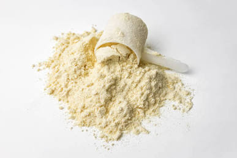
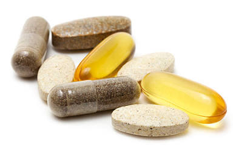

O que são suplementos?
Suplementos alimentares são produtos utilizados para complementar a alimentação, fornecendo nutrientes e outras substâncias que podem estar em quantidades insuficientes na dieta de uma pessoa.
Eles podem ser encontrados em diferentes formatos, como cápsulas, comprimidos, pós, líquidos e barras.
Segundo a ANVISA (Agência Nacional de Vigilância Sanitária), os suplementos são destinados a complementar a alimentação com nutrientes, substâncias bioativas, enzimas ou probióticos.
Suplemento faz mal?
Não necessariamente. Quando utilizados corretamente, respeitando as doses recomendadas e as necessidades individuais, os suplementos alimentares geralmente podem ser consumidos com segurança
Porém, isso não significa que sejam totalmente livres de riscos. O uso inadequado pode causar efeitos indesejados e até prejudicar a saúde.
- Excesso de nutrientes: consumir vitaminas e minerais em quantidades elevadas pode causar intoxicações e outros problemas.
- Problemas digestivos: alguns suplementos podem provocar náuseas, diarreia, gases e desconforto abdominal.
- Sobrecarga ou complicações: determinados produtos podem representar riscos para os rins ou fígado, dependendo da substância, da dose e das condições de saúde da pessoa.
- Interações: alguns suplementos podem interferir no efeito de medicamentos.
Quais problemas os suplementos podem causar?
- Procure orientação de um nutricionista ou profissional de saúde habilitado.
- Respeite as quantidades indicadas.
- Compre produtos de procedência confiável.
- Confira a composição, a validade e as recomendações do rótulo.
- 1. Não utilize suplementos para substituir refeições ou medicamentos.
Como consumir suplementos com segurança?
Essas recomendações também são reforçadas pela ANVISA.
suplementos não são necessariamente prejudiciais à saúde. Entretanto, o consumo sem necessidade, em excesso ou sem orientação adequada pode provocar efeitos adversos. O uso consciente é fundamental para aproveitar seus possíveis benefícios sem colocar a saúde em risco.
Porque usar?
O uso de suplementos alimentares pode ser importante para complementar a alimentação e atender às necessidades nutricionais de uma pessoa quando a dieta, sozinha, não consegue fornecer quantidades suficientes de determinados nutrientes.
Na prática, eles também podem auxiliar pessoas que praticam atividades físicas, possuem necessidades nutricionais específicas ou apresentam alguma deficiência nutricional.
- Complementar a alimentação: ajudar a atingir a quantidade diária necessária de proteínas, vitaminas e minerais.
- Auxiliar no ganho de massa muscular: suplementos como whey protein podem facilitar o consumo adequado de proteínas.
- Melhorar o desempenho físico: a creatina, por exemplo, pode contribuir para o desempenho em exercícios de força e alta intensidade.
- Corrigir deficiências nutricionais: determinados suplementos podem ajudar a repor nutrientes que estão em níveis insuficientes no organismo.
- Atender necessidades específicas: pessoas com determinadas restrições alimentares podem precisar de suplementação.
Principais motivos para utilizar suplementos
É necessário tomar suplementos para ter resultados na academia?
Não! É possível ganhar massa muscular, perder gordura e melhorar o condicionamento físico sem utilizar suplementos.
- Alimentação equilibrada.
- Prática regular de exercícios físicos.
- Descanso e recuperação adequados.
O mais importante é manter três pilares:
Principais suplementos
Whey Protein

O Whey Protein é um suplemento produzido a partir da proteína do soro do leite. É utilizado para complementar a ingestão diária de proteínas, auxiliando na recuperação e no desenvolvimento muscular, especialmente quando associado à prática de exercícios físicos.
Creatina
A creatina é uma substância naturalmente produzida pelo organismo e também encontrada em alimentos como carnes e peixes. Sua suplementação pode melhorar o desempenho em exercícios de alta intensidade, contribuindo para o aumento da força e da capacidade muscular.
Vitaminas e Minerais

Vitaminas e minerais são nutrientes essenciais para o funcionamento adequado do organismo. Participam de processos como produção de energia, fortalecimento do sistema imunológico, saúde dos ossos e funcionamento dos músculos. A suplementação pode ajudar a corrigir deficiências nutricionais.
Pré-treino
O pré-treino é um suplemento utilizado antes da atividade física, geralmente contendo ingredientes como cafeína, beta-alanina e outros compostos. Dependendo da composição, pode auxiliar na disposição, concentração e desempenho durante os exercícios.